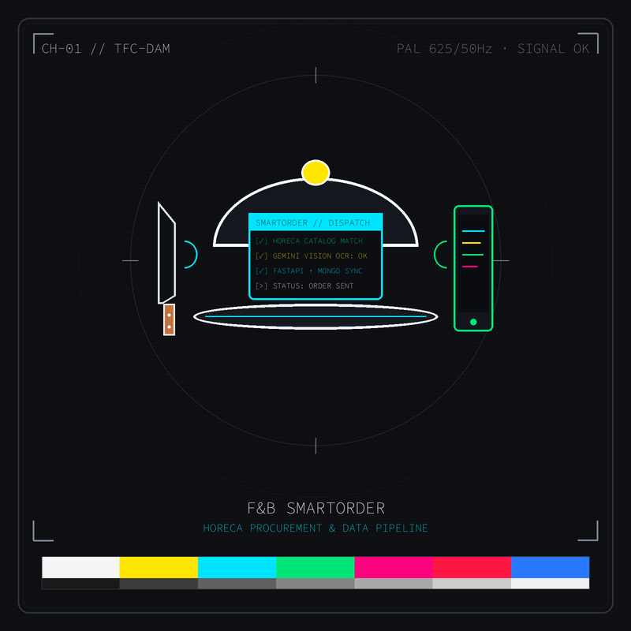

SmartOrder HORECA

Solución multiplataforma orientada al sector hostelero (TFC - DAM). Desarrollada con Python (FastAPI), MongoDB y Android (Kotlin), integra Google Gemini Vision para normalizar e ingestar catálogos de proveedores y automatizar el ciclo completo de pedidos con fricción cero para jefes de cocina.